항공산업기사 (2004-05-23 기출문제)
1과목: 항공역학
1. 항공기가 등속수평비행을 하기 위한 조건은 어느 것인가? (단, 양력:L, 항력:D, 추력:T, 무게:W)
- L=D,T=W
- L=W,D=T
- L=T,D=W
- L=D,L=T
(정답률: 84%)

2. 어떤 원통관내 비압축성 흐름에서 입구(A)의 지름이 5㎝이고, 출구(B)의 지름이 10㎝ 일때 A를 지나는 유체속도가 5m/sec 이다. B를 지나는 유체의 속도는 얼마인가? (단, ρ 는 일정)
- 5 m/sec
- 2.5 m/sec
- 1.25 m/sec
- 0.25 m/sec
(정답률: 62%)
3. 고도 약 2,300m에서 비행기가 825m/sec로 비행할 때 마하수는? (단, 음속
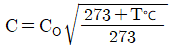
, Co = 330[m/sec])- 2.0
- 2.5
- 3.0
- 3.5
(정답률: 80%)
4. 헬리콥터의 코닝앵글(coning angle)을 설명한 내용으로 틀린 것은?(오류 신고가 접수된 문제입니다. 반드시 정답과 해설을 확인하시기 바랍니다.)
- 원심력과 블레이드(blade)의 시위선과 이루는 각이다
- 헬리콥터에 무거운 하중을 매달았을 때는 코닝앵글이 크게 된다.
- 원심력과 양력 때문에 생기는 각이다.
- 원심력이 일정하다면 코닝앵글도 일정하다.
(정답률: 40%)
5. 사이드 슬립(side slip)에 의한 롤링 모멘트 변화에 가장 크게 작용하는 것은?
- 에이러론(aileron)
- 안정판(stabilizer)
- 후퇴각
- 상반각(dihedral angle)
(정답률: 43%)
6. 항공기가 세로안정성이 있다는 것은 다음 중 어느 경우에 해당하는가?(오류 신고가 접수된 문제입니다. 반드시 정답과 해설을 확인하시기 바랍니다.)
- 받음각이 증가함에 따라 빗놀이 모멘트값이 부(-)의 값을 갖는다.
- 받음각이 증가함에 따라 빗놀이 모멘트값이 정(+)의 값을 갖는다.
- 받음각이 증가함에 따라 옆놀이 모멘트값이 부(-)의 값을 갖는다.
- 받음각이 증가함에 따라 옆놀이 모멘트값이 정(+)의 값을 갖는다.
(정답률: 47%)
7. 다음의 내용중 가장 올바른 것은?
- 조종면은 힌지축을 중심으로 위와 아래로,또는 좌.우로 변위한다.
- 조종면이 변해도 캠버는 항상 일정하다.
- 조종면에 발생하는 힌지모멘트는 동압과 힌지모멘트 계수에 반비례한다.
- 조종면의 폭과 시위의 크기를 2배로 하면 조종력은 4배가 된다.
(정답률: 48%)
8. 헬리콥터 회전날개의 회전면과 회전날개(원추모서리)사이의 각을 코닝각(Coning Angle)이라 부르는데 이러한 코닝각을 결정하는 가장 중요한 요소는?
- 항력과 원심력의 합력
- 양력과 추력의 합력
- 양력과 원심력의 합력
- 양력과 항력의 합력
(정답률: 84%)
9. 비행기의 평형상태를 뜻하는 것이 아닌 것은?
- 작용하는 모든 힘의 합이 무게중심에서 "0"인 상태
- 속도변화가 없는 상태
- 비행기의 기관이 추력을 일정하게 내는 상태
- 비행기의 회전 모멘트 성분들이 없는 상태
(정답률: 53%)
10. 고정피치 프로펠러를 장착한 항공기의 비행속도가 증가하는 경우에 가장 올바른 내용은?
- 깃각이 증가한다.
- 깃의 받음각이 증가한다.
- 깃각이 감소한다
- 깃의 받음각이 감소한다.
(정답률: 48%)
11. 항력계수가 0.02 이며, 날개면적이 20[m2]인 항공기가 150[m/sec]로 등속도 비행을 하기 위해 필요한 추력은 약 몇[㎏f]인가?(단, 공기의 밀도는 0.125㎏f· sec2/m4)
- 430
- 560
- 640
- 720
(정답률: 68%)
12. 항공기 날개에 상반각을 주게되면 다음과 같은 특성을 갖게 한다. 가장 올바른 내용은?
- 유도저항을 적게하고 방향 안정성을 좋게한다.
- 옆 미끄럼을 방지하고 가로 안정성을 좋게 한다.
- 익단 실속을 방지하고 세로 안정성을 좋게 한다.
- 선회성능을 향상시키나 가로 안정성을 해친다.
(정답률: 79%)
13. 비행기 중량 W=5000㎏, 날개면적 S=50m2, 비행고도가 해면상일 때 최소속도 Vmin (m/sec)을 구하면? (단, 비행기의 CL max(양력계수)= 1.56 밀도 ρ =1/8 ㎏f· sec2/m4)
- 0.32
- 1.32
- 13.2
- 32
(정답률: 61%)
14. 제트기의 항속거리를 최대로 하기 위한 조건중 가장 올바른 것은?
- 비연료 소비율을 크게한다.
- (
 )MAX 인 상태로 비행한다.
)MAX 인 상태로 비행한다. - 추력을 최대로 비행한다.
- 하중계수를 최대로 비행한다.
(정답률: 87%)
15. 날개 표면에서는 천이(TRANSITION)현상이 일어난다. 그 현상을 가장 올바르게 설명한 것은?
- 흐름이 날개 표면으로 부터 박리되는 현상
- 유체가 진동하면서 흐르는 현상
- 유체의 속도가 시간에 대해서 변화하는 비정상류로 변화하는 현상
- 층류 경계층에서 난류 경계층으로 변화하는 현상
(정답률: 86%)
16. 날개의 순환이론에 대한 설명으로 가장 올바른 내용은?
- 날개의 앞쪽에는 출발와류로 인한 빗올림 흐름이 있다.
- 속박와류로 인하여 날개에 양력이 발생한다.
- 날개를 지나는 흐름은 윗면에서는 정(+)압이고, 아랫면에서는 부(-)압이다.
- 날개끝 와류의 중심축은 흐름방향에 직각이다.
(정답률: 48%)
17. 압력중심(CENTER OF PRESSURE)에 관한 설명으로 가장 거리가 먼 것은?
- 날개에 압력이 작용하는 합력점이다.
- 압력중심의 위치는 앞전으로 부터 압력중심까지의 거리와 시위 길이와의 비(%)로 나타낸다.
- 보통의 날개에서 받음각이 커지면 압력중심은 뒤로 이동한다.
- 압력중심 이동이 크면 비행기의 안정성에 좋지않다.
(정답률: 68%)
18. 프로펠러의 각 단면에서 추력에 해당하는 값은? (단, L : 깃 요소 양력 , α : 받음각, D : 깃 요소 항력 , β : 깃각 , ψ : 유입각)
- L cos(α )
- DL cos(α )-D sin(α )
- L cos(β )-D sin(β )
- L cos(ψ )-D sin(ψ )
(정답률: 47%)
19. 프로펠러의 깃각에 비틀림을 주는 가장 큰 이유는?
- 깃의 뿌리에서 끝까지 받음각을 일정하게 유지시킨다
- 깃의 뿌리에서 끝까지 유입각을 일정하게 유지시킨다
- 깃의 뿌리에서 끝까지 피치를 일정하게 유지시킨다.
- 깃의 뿌리에서 끝으로 감에 따라 피치를 감소시킨다.
(정답률: 48%)
20. 비행기가 하강비행을 하는 동안 조종간을 당겨 기수를 올리려 할 때, 받음각과 각속도가 특정값을 넘게 되면 예상한 정도 이상으로 기수가 올라가게 되는 현상은?
- 스핀(spin)
- 더치롤(Duch roll)
- 버페팅 (buffeting)
- 피치 업(pitch up)
(정답률: 84%)
2과목: 항공기관
21. 제트 엔진에서 TCCS란 무엇을 의미하는가?
- 엔진의 추력을 자동적으로 제어해 주는 계통을 말한다.
- 터빈 블레이드와 터빈 케이스 사이의 간극을 최소가 되게 해주는 계통이다.
- 주로 중.소형의 터보 팬 엔진에 많이 사용한다.
- TCCS는 Thrust Case Cooling System의 약자이다.
(정답률: 66%)
22. 마그네토에서 접점(breaker point) 간격이 커지면 어떤 현상을 초래하겠는가?
- 점화(spark)가 늦게 되고 강도가 높아진다.
- 점화가 일찍 발생하고 강도가 약해진다.
- 점화가 늦게 되고 강도가 약해진다.
- 점화가 일찍 발생하고 강도가 높아진다.
(정답률: 64%)
23. 크랭크축의 주요 3부분에 속하지 않는 것은?
- Main Journal
- Crank Pin
- Connecting Rod
- Crank Arm
(정답률: 60%)
24. 공기 사이클(Air Cycle) 3개중 같은 압축비에서 최고압력이 같을 때 이론 열효율이 가장 높은것 부터 낮은 것을 올바르게 나열한 것은?
- 정적 - 정압 - 합성
- 정압 - 합성 - 정적
- 합성 - 정적 - 정압
- 정적 - 합성 - 정압
(정답률: 66%)
25. 제트 엔진에서 배기노즐(exhaust nozzle)의 가장 중요한 기능은? (단, 노즐에서의 유속은 초음속이다)
- 배기가스의 속도와 압력을 증가시킨다.
- 배기가스의 속도를 증가시키고 압력을 감소시킨다.
- 배기가스의 속도와 압력을 감소시킨다.
- 배기가스의 속도를 감소시키고 압력을 증가시킨다.
(정답률: 82%)
26. 방사형 엔진의 크랭크 축에서 정적평형은 어느 것에 의해 이루어 지는가?
- dynamic damper
- counter weight
- dynamic suspension
- split master rod
(정답률: 75%)
27. 고 출력용에 사용되는 중공(Hollow) 프로펠러의 재질은 무엇으로 만들어 지는가?
- 알루미늄 합금(25ST, 75ST)
- 크롬-니켈-몰리브덴 강(Cr-Ni-Mo강)
- 스텐인레스 강(STAINLESS STEEL)
- 탄소 강(CARBON STEEL)
(정답률: 73%)
28. 왕복엔진의 체적효율에 영향을 미치지 않는 것은?
- 실린더 헤드 온도(cylinder head temperature)
- 엔진회전수(engine RPM)
- 연료/공기비(fuel/air ratio)
- 기화기 공기온도(carburetor air temperature)
(정답률: 36%)
29. 에너지에는 상호간에 변환이 가능하고 물체가 갖고 있는 에너지의 총합은 외부와 에너지를 교환하지 않는한 일정 하다는 법칙은?
- 에너지 보존법칙
- 보일의 법칙
- 샤를의 법칙
- 열역학 제2법칙
(정답률: 78%)
30. 제트엔진에서 사용하는 연료펌프 형식이 아닌 것은?
- 스프레이 펌프
- 원심력 펌프
- 기어 펌프
- 플런저 펌프
(정답률: 50%)
31. 고점성 오일의 사용은 무엇을 초래하는가?
- 소기펌프의 고장
- 압력펌프의 고장
- 낮은 오일압력
- 높은 오일압력
(정답률: 67%)
32. 가스터빈 기관의 연소실 성능에 대한 설명으로 가장 올바른 것은?
- 연소효율은 고도가 높을 수록 좋아진다.
- 연소실 출구온도 분포는 일반적으로 안쪽 지름쪽이 바깥 지름쪽 보다 높은 것이 좋다.
- 입구와 출구의 전 압력(Total pressure)차가 클 수록 좋다.
- 고공 재시동 가능범위가 넓을 수록 좋다.
(정답률: 71%)
33. 가스터빈 엔진 작동시 다음 엔진 변수중 어느 것이 가장 중요한 변수인가?
- 압축기 rpm
- 터빈입구 온도
- 연소실 압력
- 압축기입구 공기온도
(정답률: 34%)
34. 온도가 일정하게 유지되는 상태변화를 무엇이라 하는가?
- 정압변화
- 등온변화
- 정적변화
- 단열변화
(정답률: 80%)
35. 가스터빈 엔진의 공압 시동기에 대해 잘못 된 설명은?
- APU 또는 지상 시설에서의 고압 공기를 사용한다.
- 기어박스를 매개로 엔진의 압축기를 구동시킨다.
- 시동완료 후 발전기로서 작동한다.
- 사용시간에 제한이 있다.
(정답률: 59%)
36. 프로펠러가 고속으로 회전할 때 발생하는 응력(stress)중 추력(thrust)에 의해서 발생되는 것은?
- 인장응력
- 전단응력
- 비틀림응력
- 굽힘응력
(정답률: 52%)
37. 3㎰는 몇 와트(W)인가?
- 2,438
- 2,206.5
- 1,650
- 225
(정답률: 51%)
38. 압력식 기화기에서 농후(enrichment) 밸브는 다음중 어느 압력에 의하여 열려지는가?
- 공기압
- 수압
- 연료압
- 벤츄리 공기압
(정답률: 44%)
39. 터보팬(turbo-fan) 제트기관의 1차 공기량이 50 ㎏f/sec, 2차 공기량 60 ㎏f/sec, 1차 공기 배기속도 170 m/sec, 2차 공기 배기속도 100 m/sec 이었다.이 기관의 바이패스 비(bypass ratio)는 얼마인가?
- 0.59
- 0.83
- 1.2
- 1.7
(정답률: 55%)
40. E-gap 각이란 마그네토의 폴(pole)의 중립 위치로부터 어떤 지점까지의 각도를 말하는가?
- 접점이 닫히는 지점
- 접점이 열리는 지점
- 1차 전류가 가장 낮은점
- 2차 전류가 가장 낮은점
(정답률: 74%)
3과목: 항공기체
41. 항공기 중량을 측정한 결과 다음과 같다. 날개앞전으로 부터 무게중심 까지의 거리를 MAC(공력평균시위) 백분율로 표시하면?
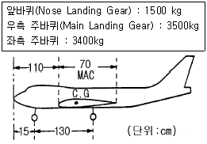
- 14.5% MAC
- 16.9% MAC
- 21.7% MAC
- 25.4% MAC
(정답률: 63%)
42. 너트(Nut)의 일반적인 설명 중 가장 올바른 내용은?
- 평 너트(Plain Hexagon Airframe Nut)는 인장하중을 받는 곳에 사용한다.
- 잼 너트(Hexagon Jam Nut)는 맨손으로 조일 수 있는 곳에서 조립부를 빈번하게 장탈 혹은 장착하는데 적합하게 만들어져 있다.
- 나비 너트(Plain Wing Nut)는 평 너트, 세트 스크류 끝 부분의 나사가 있는 로드에 장착되어 고정하는 역할을 한다.
- 구조용 캐슬 너트(Plain Castellated Airframe Nut)는 홈이 없이 사용된다.
(정답률: 73%)
43. 항공기 수리용 도면에서 은선(HIDDEN LINES)은 무엇을 가르키는가?
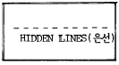
- 눈에 안보이는 끝(EDGE)또는 윤곽선을 가르킨다.
- 물체의 어떤 면부분이 도면상에서 보이지 않는 것을 가르킨다.
- 물체의 교차되는 부분 또는 없어진 부분과 관계되는 부분을 가르킨다.
- 한 물체의 단면도 상에 노출된 표면을 가르킨다.
(정답률: 53%)
44. 스크류(Screw)의 식별부호 NAS 144 DH-22에서 DH는 무엇을 가리키는가?
- 재질
- 머리모양
- 드릴헤드
- 길이
(정답률: 60%)
45. 허니컴구조(Honeycomb Structure)에서 층분리 (Delamination)를 체크(check)하는 가장 간단한 방법은?
- Dye Penetrant
- Metallic Ring Test
- X-Ray
- Ultrasonic
(정답률: 54%)
46. 단면적이 A, 길이가 ℓ 인 beam에 축방향으로 힘 P가 작용 할 때 변위 δ 는?
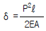
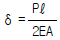
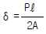
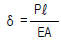
(정답률: 35%)
47. 랜딩기어에서 전륜식(nose gear)과 후륜식(tail gear)의 차이점 중 틀린 것은?
- 전륜식이 후륜식 보다 이륙시 저항이 작다.
- 전륜식이 후륜식 보다 조종사의 시야가 좋다.
- 후륜식이 전륜식 보다 승객이 안락하다.
- 제트기에서는 배기 관계로 전륜식이어야 한다.
(정답률: 75%)
48. 밀착된 구성품 사이에 작은 진폭의 상대운동이 일어날 때에 발생하는 제한된 형태의 부식은 무엇인가?
- 점(PITTING) 부식
- 찰과(FRETTING) 부식
- 피로(FATIGUE) 부식
- 동전기(GALVANIC) 부식
(정답률: 71%)
49. 클레비스 볼트는 일반적으로 항공기의 어느 부분에 주로 사용 하는가?
- 외부 인장력이 작용하는 부분
- 전단력이 작용하는 부분
- 착륙기어 부분
- 인장력과 전단력이 작용하는 부분
(정답률: 73%)
50. 알루미늄 합금판에서 "알크래드(alclad)"란 말은 판의 표면 부식방지를 위하여 어떻게 처리한 것을 말하는가?
- 크롬-인산염 처리
- 전기도금-화학처리
- 카드늄 판을 입힘
- 순 알루미늄을 피복
(정답률: 78%)
51. 그림은 구멍이 뚫린 평판이 인장하중을 받을 때 생기는 응력분포 곡선들이다. 가장 올바른 것은?
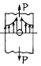
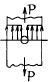
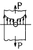
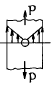
(정답률: 78%)
52. 수송유형 비행기의 제한하중 배수가(+)방향으로 2.5 이며 항공기의 안전율은 1.5로 하였을 때 종극하중배수는 얼마인가?
- 5.25
- 3.75
- 1.67
- 0.6
(정답률: 66%)
53. 알루미늄판(ALUMINUM SHEET)두께가 0.⑤1인치인 재료를 굴곡반경 0.125인치가 되도록 90° 굴곡할 때 생기는 세트백(SET BACK)은 얼마인가?
- 0.017in
- 0.074in
- 0.125in
- 0.176in
(정답률: 79%)
54. 재료의 변형은 하중에 의하여 어느 작은 범위에서는 응력과 변형율의 비례관계가 σ = Eε 로 성립된다. 이것을 무엇이라 하는가?
- 탄성계수
- 후크의 법칙
- 영률
- 응력-변형율
(정답률: 57%)
55. 다음은 딤플링(Dimpling) 작업시의 주의사항이다. 틀린 것은?
- 판을 2개이상 겹쳐서 동시에 딤플링하는 방법은 되도록 이면 삼가한다.
- 티타늄합금은 홀딤플링을 적용하지 않으면 균열을 일으킨다.
- 마무리 작업시에는 반대방향으로 다시 딤플링한다.
- 얇은 판 때문에 카운터 싱킹한계(0.040 in이하)를 넘을 때는 딤플링으로 한다.
(정답률: 80%)
56. 성형 후 수축율이 적으며 우수한 기계적강도와 접착강도를 가져 항공기 구조물용 접착제나 도료의 재료로 사용되는 열경화성 수지는?
- 폴리에틸렌수지
- 페놀수지
- 에폭시수지
- 폴리우레탄수지
(정답률: 68%)
57. 케이블 조종계통(cable control system)에서 7×19 의 cable을 가장 올바르게 설명한 것은?
- 7개의 wire 로서 1개 다발을 만들고 이 다발 19개로서 1개의 cable을 만든 것이다.
- 19개의 wire로서 1개 다발을 만들고 이 다발 7개로서 1개의 cable을 만든 것이다.
- 7개의 다발로서 19개로 만든 것이다.
- 19개의 다발로서 7개로 만든 것이다.
(정답률: 80%)
58. 페일세이프(fail-safe) 구조형식에 속하지 않는 것은?
- 다경로 하중(redundant) 구조
- 샌드위치(sandwich) 구조
- 이중(double) 구조
- 대치(back-up) 구조
(정답률: 86%)
59. 조종면의 평형(Balancing)에서 동적평형(Dynamic balance)이란?
- 물체가 자체의 무게중심으로 지지되고 있는 상태
- 조종면을 어느위치에 돌려 놓거나 회전 모멘트가 영(Zero)으로 평형되는 상태
- 조종면을 평형대 위에 장착하였을 때 수평위치에서 조종면의 뒷전이 밑으로 내려가는 상태
- 조종면을 평형대 위에 장착하였을 때 수평위치에서 조종면의 뒷전이 위로 올라가는 상태
(정답률: 73%)
60. 강철형 튜브 구조재가 나옴에 따라 개발된 형식으로 이러한 구조는 내부에 보강용 웨브(web)나 버팀줄(bracing wire)을 할 필요가 없으므로 조종실이나 여객실에 보다 많은 공간을 줄수가 있다.또 충분한 강도도 가질수 있으며,보다 유선형인 형태로의 동체성형이 용이하다. 이 구조 형식은?
- pratt truss
- warren truss
- monocoque
- semi-monocoque
(정답률: 57%)
4과목: 항공장비
61. 항공기에 장착되어 있는 플라이트 인터폰(Flight Interphone)의 주 목적은?
- 운항중에 승무원 상호간의 통화와 통신 항법계통의 오디오 신호를 승무원에게 분배, 청취하기 위하여
- 비행중에 항공기 내에서 유선통신을 사용하기 위하여
- 비행중에 운항 승무원과 객실 승무원의 상호통화와 기타 오디오 신호를 승무원에게 분배,청취하기 위하여
- 비행중에 조종실과 지상 무선시설의 상호통화 및 오디오 신호를 청취하기 위하여
(정답률: 45%)
62. 다음 온도계의 종류 중 bourdon tube가 사용되는 것은?
- 전기저항식
- 증기압력식
- Bi-metal식
- thermo-couple식
(정답률: 71%)
63. 작동유압(Hydraulic)계통에서 압력 단위를 나타내는 것은?
- G.P.M
- R.P.M
- P.S.I
- P.P.M
(정답률: 82%)
64. 유압계통에서 레저버(reservoir)내의 stand pipe의 가장 중요한 역할은 무엇인가?
- 계통내의 압력유동를 감소시킨다.
- vent 역할을 한다.
- 비상시 작동유의 예비공급 역할을 한다.
- 탱크내의 거품이 생기는 것을 방지한다.
(정답률: 72%)
65. 장거리 통신에 가장 적합한 장치는?
- HF 통신 장치
- VHF 통신 장치
- UHF 통신 장치
- SHF 통신 장치
(정답률: 81%)
66. 스모크 감지기(Smoke Detector)에 대한 설명 내용으로 가장 올바른 것은?
- 스모크 감지기(Smoke Detector)에 의해 연기가 감지되면 자동으로 소화장치가 작동되어 화재를 진압한다.
- 현대 항공기에는 연기입자에 의한 빛의 굴절을 이용한 Photo electric 방식의 감지기가 주로 사용된다.
- 스모크 감지기(Smoke Detector)는 주로 Engine, APU( Auxiliary Power Unit)등에 화재감지를 위해 장착된다.
- 스모크 감지기(Smoke Detector)는 공기를 감지기내로 끌어들이기 위한 별도의 장치가 필요치 않다.
(정답률: 68%)
67. 초단파 전방향 무선표지 시설(VOR)이란?
- 지상 무선국에 해당되는 주파수를 선택하면 항공기가 지상 무선국으로부터 어느 방향에 있는지 알 수 있다.
- 지상 무선국에 해당되는 주파수를 선택하면 지상 무선국의 방향을 지시한다.
- 지상 무선국에 해당되는 주파수를 선택하면 지상 무선국에서 북서쪽 방향을 항공기에 지시한다.
- 지상 무선국에 해당되는 주파수를 선택하면 지상 무선국에서 남서쪽 방향을 항공기에 지시한다.
(정답률: 62%)
68. 자차 수정시 자차의 허용범위는?
- ± 10°
- ± 12°
- ± 14°
- ± 16°
(정답률: 74%)
69. PITOT-STATIC 계통과 관계 없는 계기는?
- 속도계(Airspeed meter)
- 승강계(Rate-Of-Climb Indicator)
- 고도계(Altimeter)
- 가속도계(Accelerometer)
(정답률: 66%)
70. 발전기에서 외부에 부하를 연결하면 전기자 코일에 전류가 흐르고, 이에 의해 자장이 기울어지는 편류가 발생한다. 이 편류를 교정하기 위해 설치하는 것의 명칭은?
- 정속구동장치
- 정류자
- C.P.U.
- 보극
(정답률: 53%)
71. 전류계(Ammeter)에 사용되는 션트(Shunt)저항은 다르송발 (D'Arsonval)계기와 어떻게 연결되는가?
- 직렬
- 병렬
- 직렬과 병렬 동시에
- 션트(Shunt)저항은 필요없다.
(정답률: 56%)
72. 프레온 에어콘 계통에서 콘덴서의 냉각공기는 어디로 부터 오는가?
- 엔진압축기
- 바깥공기
- 배기가스
- 객실공기
(정답률: 64%)
73. 내부저항이 2[Ω ]인 축전지에서 가장 큰 전력을 흡수할수 있는 부하 저항값을 구하고,그 때에 흡수되는 전력을 구하면?(오류 신고가 접수된 문제입니다. 반드시 정답과 해설을 확인하시기 바랍니다.)
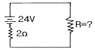
- 2[Ω ],144[W]
- 4[Ω ], 64[W]
- 1[Ω ], 64[W]
- 2[Ω ], 72[W]
(정답률: 17%)
74. 날개 및 날개 루트(WING ROOT)부분 또는 랜딩기어에 장착되며 항공기축 방향을 조명하는데 사용하는 등은?
- 착빙 감시등
- 선회등
- 항공등
- 착륙등
(정답률: 74%)
75. 다음은 탄성오차에 대한 설명이다. 틀린 것은?
- 백래쉬(Backlash)에 의한 오차
- 온도변화에 의해서 탄성계수가 바뀔 때의 오차
- 크리프(creep) 현상에 의한 오차
- 재료의 피로현상에 의한 오차
(정답률: 68%)
76. 플럭스 밸브의 장,탈착에 대하여 가장 올바르게 설명한 것은?
- 장착용 나사는 비자성체인 것을 사용해야 하며 사용공구는 보통의 것이 좋다.
- 장착용 나사, 사용공구에 대한 특별한 사용 제한이 없으므로 일반공구를 사용해도 된다.
- 장착용 나사, 사용공구 모두 비자성체인 것을 사용 해야 한다.
- 장착용 나사중 어떤 것은 자기를 띤 것을 이용하는데 이때는 그 위치를 조정하여 자차를 보정한다.
(정답률: 78%)
77. 유압 및 공압부품을 일정 기간이상 저장하면 안되는 가장 큰 이유는 무엇인가?
- 부품의 구성품이 부식되기 때문
- 부품의 구성품이 노쇄되기 때문
- 부품 내의 seal이 그 기간이상 지나면 노화되기 때문
- 법에 정하여 놓았기 때문
(정답률: 73%)
78. 제빙 부츠 취급시 주의해야 할 내용으로 틀린 사항은?
- 가솔린,오일,그리스,오염 그밖에 부츠의 고무를 열화 시킬 수 있는 물이나 액체는 접촉시키지 않는다.
- 부츠위에 공구나 정비에 필요한 공구를 놓지 않는다.
- 부츠를 저장하는 경우 천이나 종이로 덮어둔다.
- 부츠에 흠집이나 열화가 확인되면 표면을 절대로 코팅해서는 않된다.
(정답률: 46%)
79. 교류를 더하거나 빼는데 편리한 교류의 표시방법은 어느 것인가?
- 삼각함수 표시법
- 극좌표 표시법
- 지수함수 표시법
- 복소수 표시법
(정답률: 48%)
80. 싱크로 계기의 종류 중 MAGNESYN에 대한 설명 내용으로 가장 관계가 먼 것은?
- AUTOSYN의 회전자를 영구자석으로 바꾼 것을 MAGNESYN 이라 한다.
- 교류전압이 회전자에 가해진다.
- AUTOSYN 보다 작고 가볍다.
- AUTOSYN 보다 TORQUE가 약하고 정밀도가 떨어진다.
(정답률: 47%)